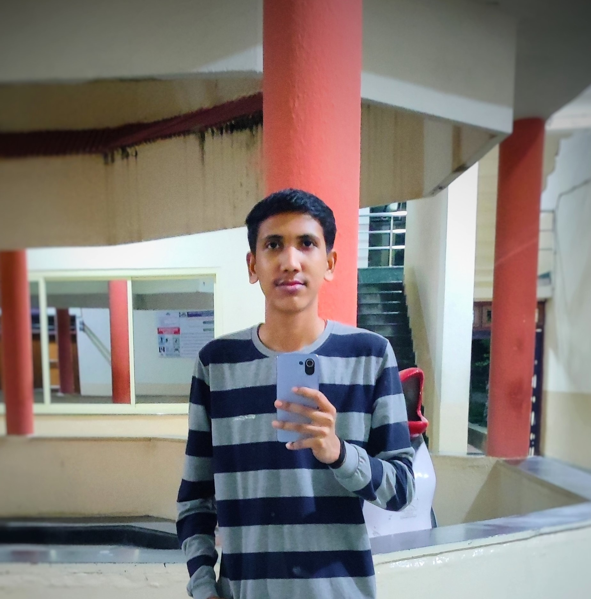

Prathmesh Takarde

summary
I'm a student pursuing my Bachelor's in Electronics and Telecommunication at SGGS Nanded.My skills are HTML,CSS,JavaScript
some other skills like Problem solving as well as collaboration with team members.currently I am seeking opportunities where I can utilize my knowledge for betterment of organization as well as to enchance my skill set.
Education
Shri Guru Gobind Singhji Institute of Engineering and Technology Nanded
C.S.Kothari Junior College Nandura
Mahatma Fuley Highschool Nimgaon
Skills
- Problem Solving
- Web Development
- Project Management
- C++
Hobbies
- Reading Books
- Playing Cricket
- Travelling
- Chess
Contact Me
© 2023 Prathmesh Takarde